library(tidyverse)
library(readr)
library(sf)Bolivia Pilcomayo Heavy Metals Study - with WHO standards
1 Introduction
This analysis explores heavy metal concentrations from 2006 across the Pilcomayo River basin in Chuquisaca, Bolivia. The work is inspired by data from Fundación I.T.A. and aligned with WHO drinking-water guidelines and agricultural soil reference thresholds, with the aim of highlighting exceedances.
Citations:
- World Health Organization. Guidelines for drinking-water quality, fourth edition incorporating the first addendum. Geneva: WHO, 2017. ISBN 978-92-4-154995-0. https://www.who.int/publications/i/item/9789241549950
- FAO/WHO Codex Alimentarius Standard 193-1995 Rev. 2018. General standard for contaminants and toxins in food and feed. https://www.fao.org/fao-who-codexalimentarius
2 Setup
3 Water Samples
water <- read_csv("data/ITA_water_2006.csv")3.1 Lead in Water
ggplot(water, aes(x = Location, y = `Pb (mg/l)`)) +
geom_col(fill = "steelblue") +
geom_hline(yintercept = 0.01, color = "red", linetype = "dashed") +
annotate("text", x=Inf, y=0.01, label="WHO Pb limit 0.01 mg/L", hjust=1.1, vjust=-0.5, color="red", size=3) +
labs(
title = "Lead Concentration in Water vs WHO Limit",
x = "Location",
y = "mg/L"
) +
theme_minimal() +
theme(axis.text.x = element_text(angle=45, hjust=1))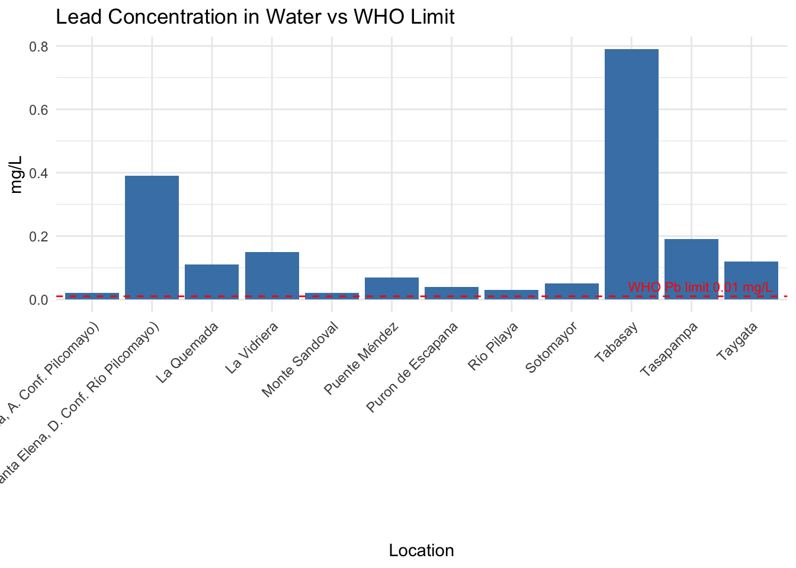
3.2 Mercury in Water
ggplot(water, aes(x = Location, y = `Hg (mg/l)`)) +
geom_col(fill = "orange") +
geom_hline(yintercept = 0.006, color = "red", linetype = "dashed") +
annotate("text", x=Inf, y=0.006, label="WHO Hg limit 0.006 mg/L", hjust=1.1, vjust=-0.5, color="red", size=3) +
labs(
title = "Mercury Concentration in Water vs WHO Limit",
x = "Location",
y = "mg/L"
) +
theme_minimal() +
theme(axis.text.x = element_text(angle=45, hjust=1))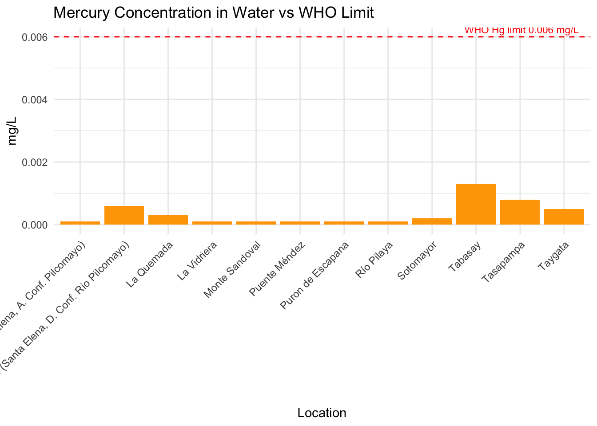
3.3 Arsenic in Water
ggplot(water, aes(x = Location, y = `As (mg/l)`)) +
geom_col(fill = "purple") +
geom_hline(yintercept = 0.01, color = "red", linetype = "dashed") +
annotate("text", x=Inf, y=0.01, label="WHO As limit 0.01 mg/L", hjust=1.1, vjust=-0.5, color="red", size=3) +
labs(
title = "Arsenic Concentration in Water vs WHO Limit",
x = "Location",
y = "mg/L"
) +
theme_minimal() +
theme(axis.text.x = element_text(angle=45, hjust=1))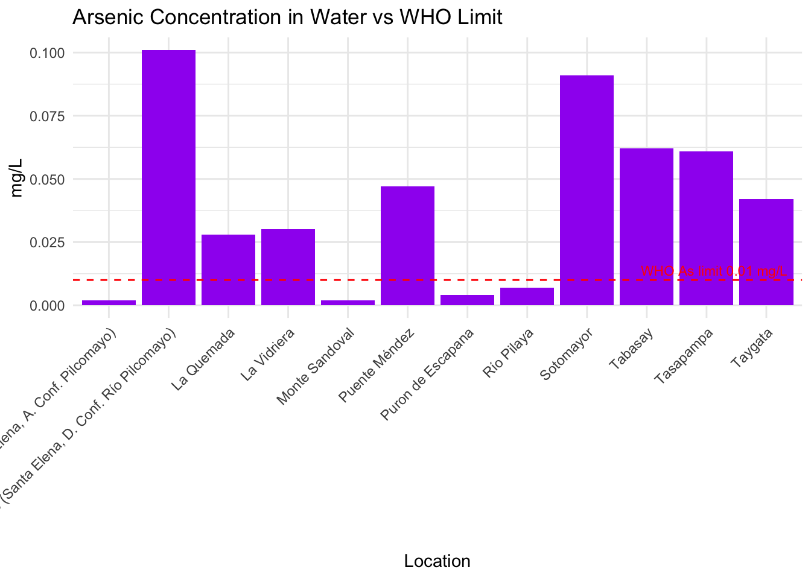
3.4 Cadmium in Water
ggplot(water, aes(x = Location, y = `Cd (mg/l)`)) +
geom_col(fill = "darkgreen") +
geom_hline(yintercept = 0.003, color = "red", linetype = "dashed") +
annotate("text", x=Inf, y=0.003, label="WHO Cd limit 0.003 mg/L", hjust=1.1, vjust=-0.5, color="red", size=3) +
labs(
title = "Cadmium Concentration in Water vs WHO Limit",
x = "Location",
y = "mg/L"
) +
theme_minimal() +
theme(axis.text.x = element_text(angle=45, hjust=1))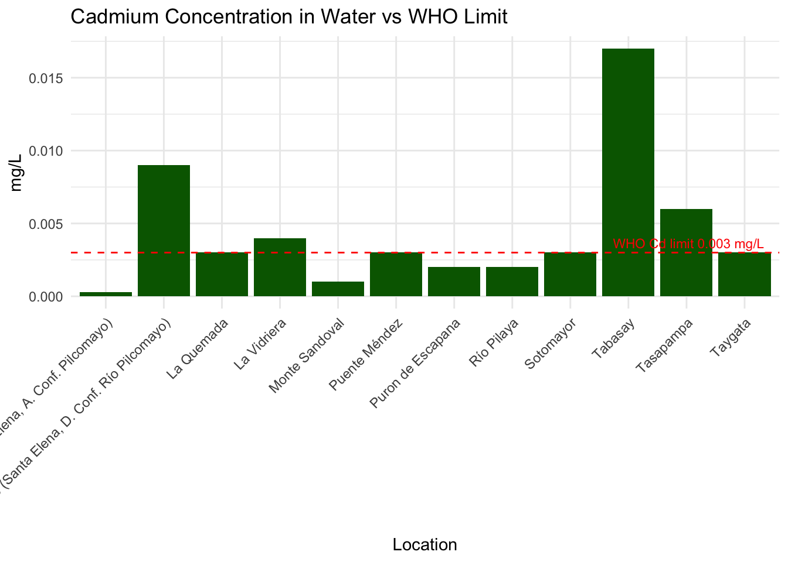
4 Soil Samples
soil <- read_csv("data/ITA_soil_2006.csv")4.1 Lead in Soil
ggplot(soil, aes(x = Location, y = `Pb (mg/kg)`)) +
geom_col(fill = "brown") +
geom_hline(yintercept = 70, color = "red", linetype = "dashed") +
annotate("text", x=Inf, y=70, label="Soil Pb limit 70 mg/kg", hjust=1.1, vjust=-0.5, color="red", size=3) +
labs(
title = "Lead Concentration in Soil vs Reference Limit",
x = "Location",
y = "mg/kg"
) +
theme_minimal() +
theme(axis.text.x = element_text(angle=45, hjust=1))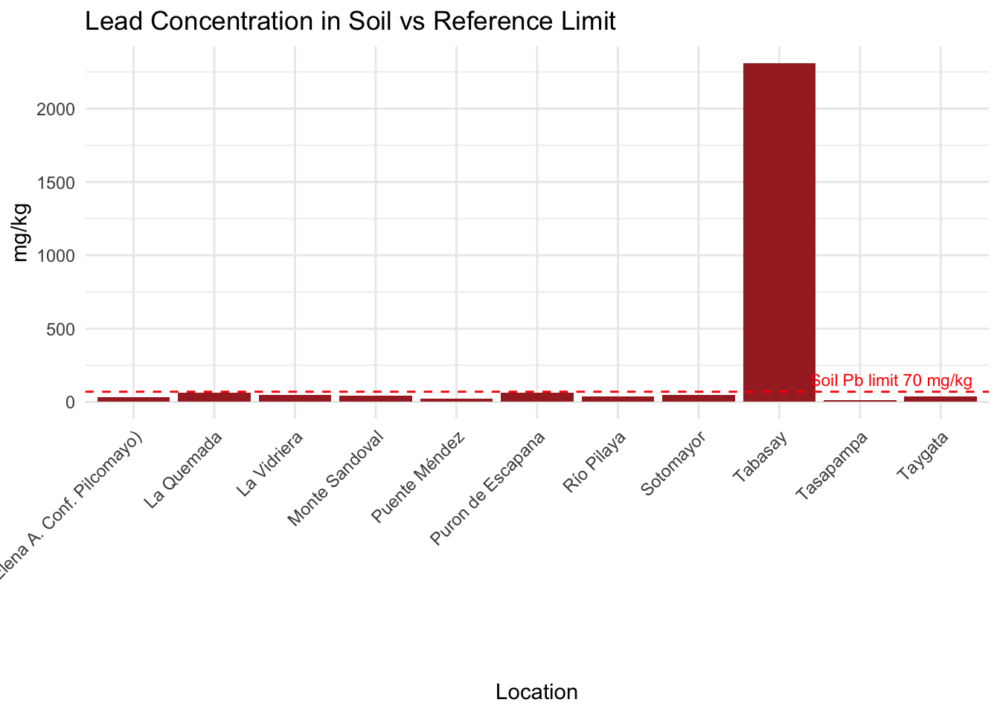
4.2 Zinc in Soil
ggplot(soil, aes(x = Location, y = `Zn (mg/kg)`)) +
geom_col(fill = "steelblue") +
geom_hline(yintercept = 300, color = "red", linetype = "dashed") +
annotate("text", x=Inf, y=300, label="Soil Zn ref 300 mg/kg", hjust=1.1, vjust=-0.5, color="red", size=3) +
labs(
title = "Zinc Concentration in Soil vs Reference",
x = "Location",
y = "mg/kg"
) +
theme_minimal() +
theme(axis.text.x = element_text(angle=45, hjust=1))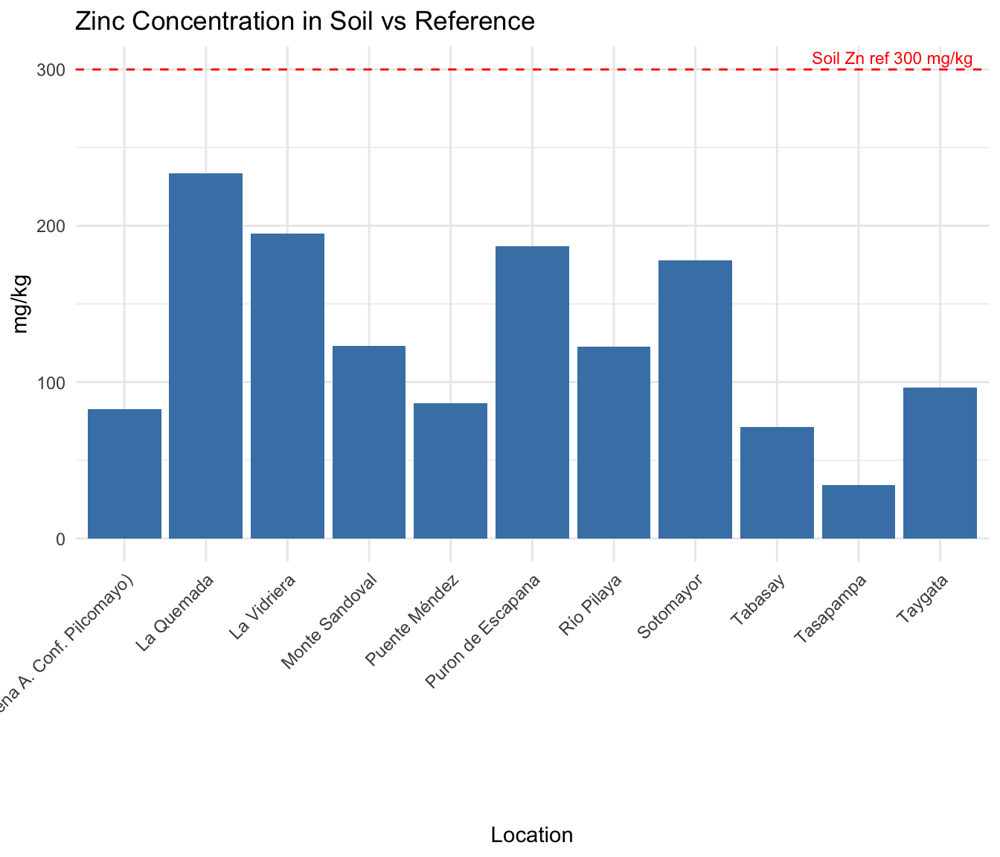
4.3 Sediment: Lead
sediment <- read_csv("data/ITA_sed_2006.csv")ggplot(sediment, aes(x=Location, y=`Pb (mg/kg)`)) +
geom_col(fill="orange") +
geom_hline(yintercept=70, color="red", linetype="dashed") +
annotate("text", x=Inf, y=70, label="Ref Pb 70 mg/kg", hjust=1.1, vjust=-0.5, color="red", size=3) +
labs(
title="Lead in Sediment vs Reference",
y="mg/kg"
) +
theme_minimal() +
theme(axis.text.x=element_text(angle=45, hjust=1))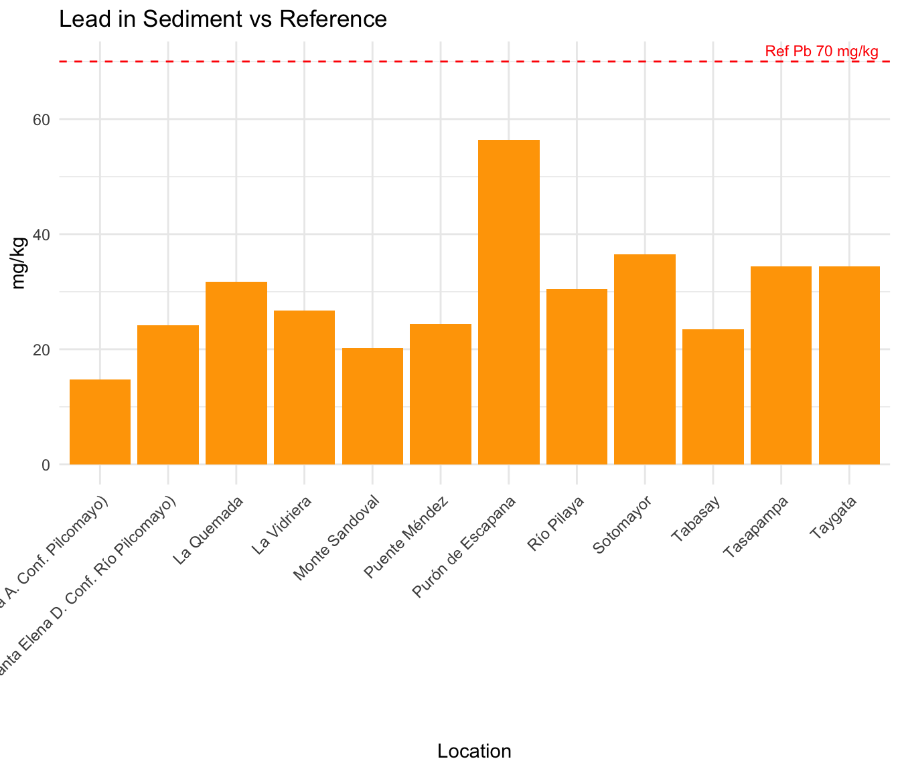
4.4 Sediment: Arsenic
ggplot(sediment, aes(x=Location, y=`As (mg/kg)`)) +
geom_col(fill="purple") +
geom_hline(yintercept=20, color="red", linetype="dashed") +
annotate("text", x=Inf, y=20, label="Ref As 20 mg/kg", hjust=1.1, vjust=-0.5, color="red", size=3) +
labs(
title="Arsenic in Sediment vs Reference",
y="mg/kg"
) +
theme_minimal() +
theme(axis.text.x=element_text(angle=45, hjust=1))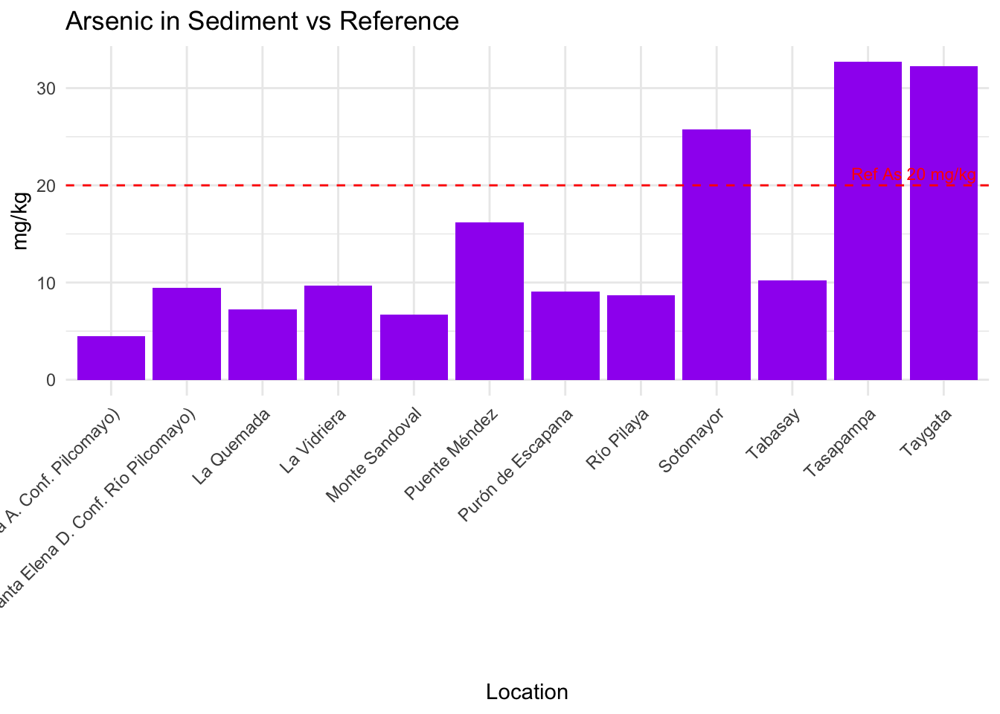
4.5 Vegetation: Lead
veg <- read_csv("data/ITA_veg_2006.csv")ggplot(veg, aes(x=Crop, y=`Pb (mg/kg)`)) +
geom_col(fill="darkgreen") +
geom_hline(yintercept=0.3, color="red", linetype="dashed") +
annotate("text", x=Inf, y=0.3, label="Codex Pb 0.3 mg/kg", hjust=1.1, vjust=-0.5, color="red", size=3) +
labs(
title="Lead in Crops vs Codex Limit",
y="mg/kg"
) +
theme_minimal() +
theme(axis.text.x=element_text(angle=45, hjust=1))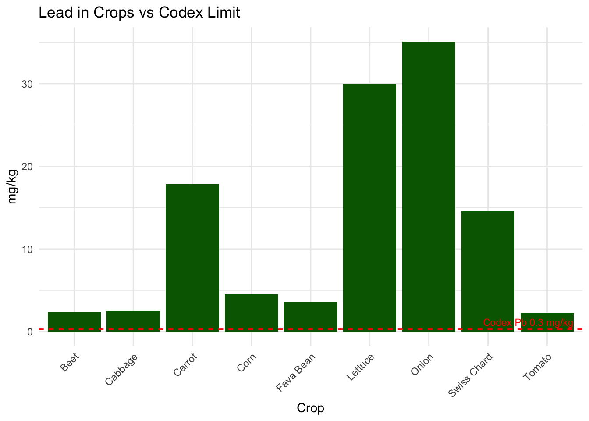
4.6 Vegetation: Cadmium
ggplot(veg, aes(x=Crop, y=`Cd (mg/kg)`)) +
geom_col(fill="brown") +
geom_hline(yintercept=0.1, color="red", linetype="dashed") +
annotate("text", x=Inf, y=0.1, label="Codex Cd 0.1 mg/kg", hjust=1.1, vjust=-0.5, color="red", size=3) +
labs(
title="Cadmium in Crops vs Codex Limit",
y="mg/kg"
) +
theme_minimal() +
theme(axis.text.x=element_text(angle=45, hjust=1))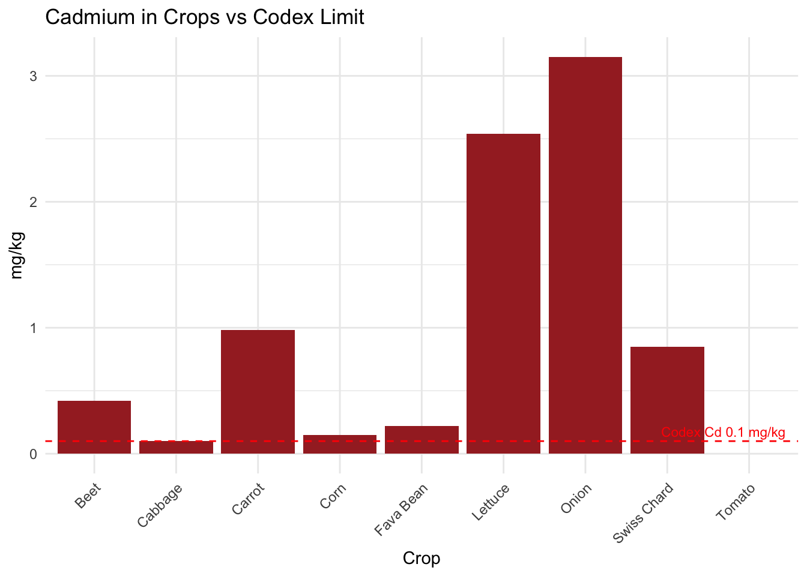
4.7 Fish: Lead
fish <- read_csv("data/ITA_fish_2006.csv")ggplot(fish, aes(x=`Sample Type`, y=`Pb (mg/kg)`)) +
geom_col(fill="dodgerblue") +
geom_hline(yintercept=0.3, color="red", linetype="dashed") +
annotate("text", x=Inf, y=0.3, label="Codex Pb 0.3 mg/kg", hjust=1.1, vjust=-0.5, color="red", size=3) +
labs(
title="Lead in Fish vs Codex Limit",
y="mg/kg"
) +
theme_minimal()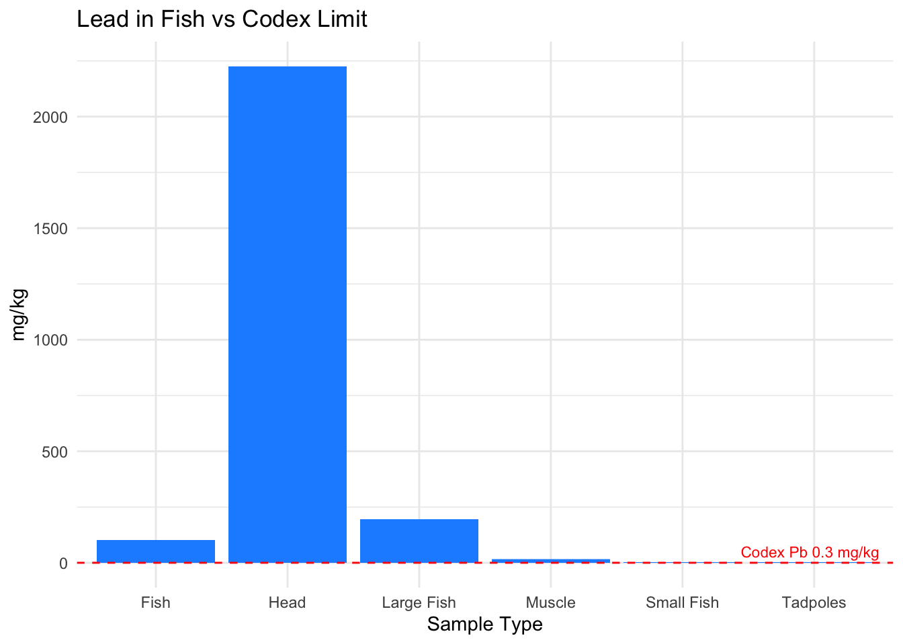
4.8 Human: Lead in Children
human <- read_csv("data/ITA_human_2006.csv")ggplot(human, aes(x=Location, y=`Pb [µg/dl] Children`)) +
geom_col(fill="pink") +
geom_hline(yintercept=5, color="red", linetype="dashed") +
annotate("text", x=Inf, y=5, label="CDC ref 5 µg/dL", hjust=1.1, vjust=-0.5, color="red", size=3) +
labs(
title="Lead in Children Blood vs CDC Ref",
y="µg/dL"
) +
theme_minimal() +
theme(axis.text.x=element_text(angle=45, hjust=1))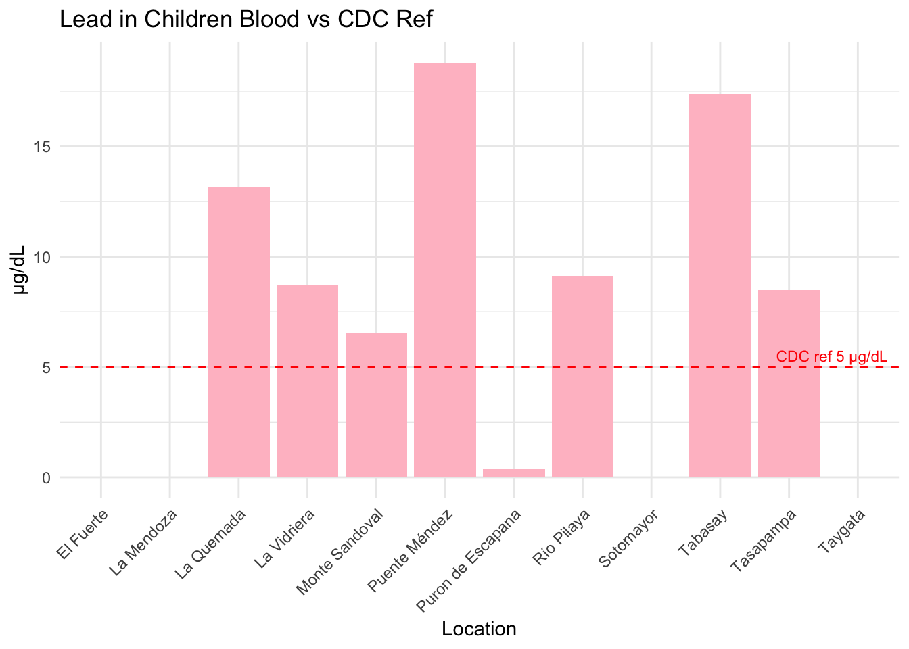
4.9 Human: Lead in Adults
ggplot(human, aes(x=Location, y=`Pb [µg/dl] Adults`)) +
geom_col(fill="darkred") +
geom_hline(yintercept=10, color="red", linetype="dashed") +
annotate("text", x=Inf, y=10, label="CDC ref 10 µg/dL", hjust=1.1, vjust=-0.5, color="red", size=3) +
labs(
title="Lead in Adults Blood vs CDC Ref",
y="µg/dL"
) +
theme_minimal() +
theme(axis.text.x=element_text(angle=45, hjust=1))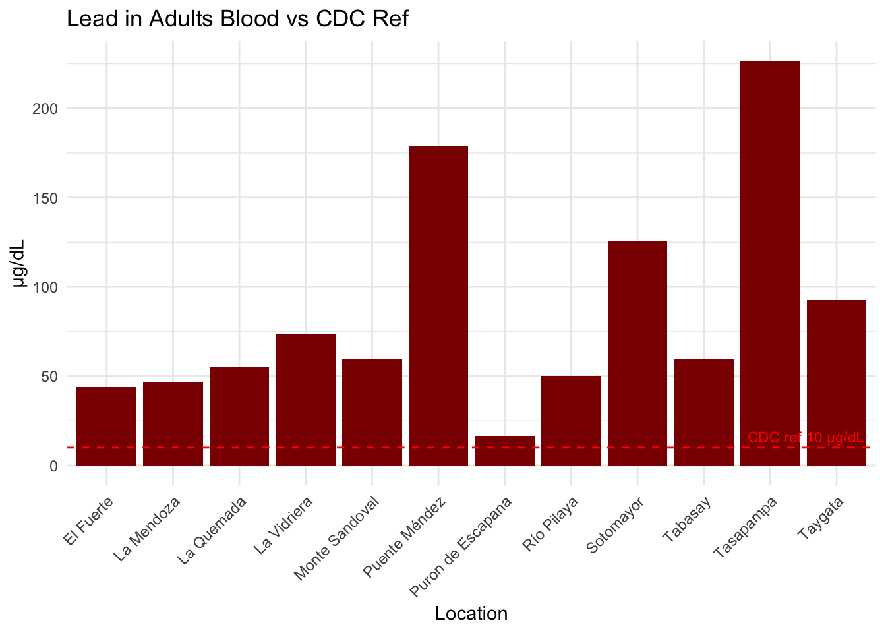
4.10 Animals: Lead
animal <- read_csv("data/ITA_animal_2006.csv")ggplot(animal, aes(x=Animal, y=`Pb (mg/dL)`)) +
geom_col(fill="darkblue") +
geom_hline(yintercept=0.3, color="red", linetype="dashed") +
annotate("text", x=Inf, y=0.3, label="Vet concern ~0.3 mg/dL", hjust=1.1, vjust=-0.5, color="red", size=3) +
labs(
title="Lead in Animal Blood vs Vet Concern Level",
y="mg/dL"
) +
theme_minimal()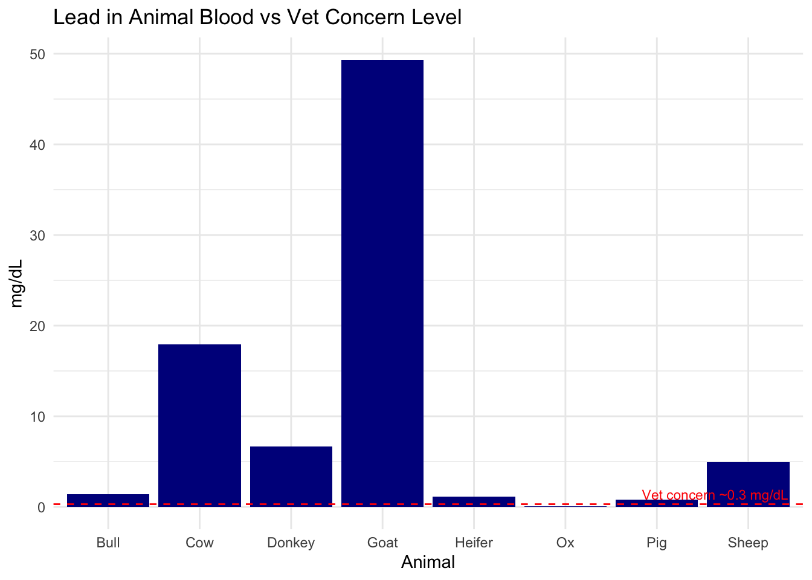